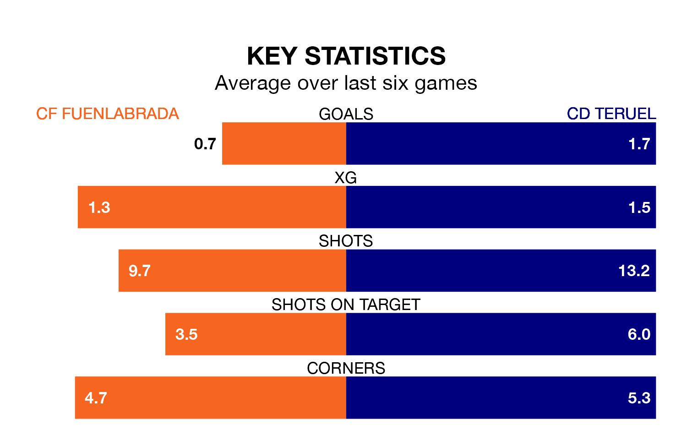

CF Fuenlabrada welcome CD Teruel to the Estadio Fernando Torres on late Saturday looking to pick up points to end their four-game losing streak.
Fuenlabrada's struggles have left them with just four points from their last six Primera Division RFEF Group 1 matches, while their opponents have earned eight from a possible 18.
Teruel are 18th in the table after 32 games, of which they have won five and drawn 17, earning 32 points.
Fuenlabrada are six places ahead of the away side in 12th, with nine wins and 11 draws putting them on 38 points.
In Taliby Konate, Teruel can rely on one of the league's safest pair of hands. He has kept 10 clean sheets in his 23 appearances this season in Primera Division RFEF Group 1.
In the hosts' net, José Javier Belman Calvo has six clean sheets in 24 games. He has conceded a goal every 86 minutes, 10% more often than the 97 minutes between goals for Konaté Diakite.
With 27 goals in 32 games so far this season, Teruel are scoring at below the league average rate with 0.8 goals per game. And they are conceding at an average rate, letting in 35 goals at a rate of 1.1 per game.
Fuenlabrada are also below average scorers, with 0.9 goals per game, compared to a league average of 1.1. They have conceded 1.1 goals per game.
Fuenlabrada's last match was on April 13, a 1-0 loss against Rayo Majadahonda.
Teruel lost 3-1 against Deportivo La Coruña last time out, also on April 13, with Borja Martínez Giner on the scoresheet.
Updated: 11:31 (UTC), 15/04/24